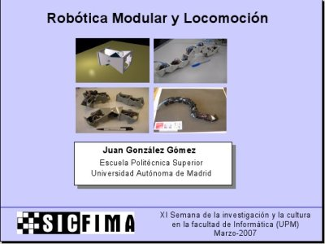
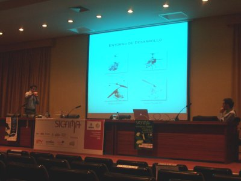
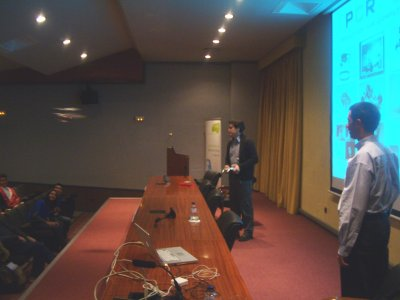
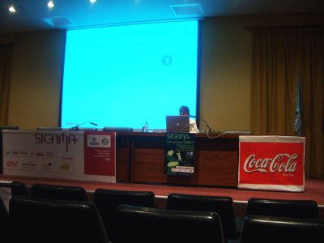
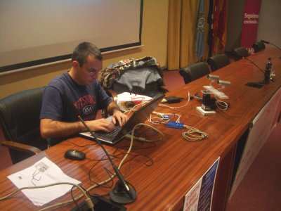

This work is licensed
under a Creative
Commons Attribution-ShareAlike 2.5 Spain License
This work is licensed
under a Creative
Commons Attribution-ShareAlike 2.5 Spain License
|
"Robótica Modular y Locomoción”. Sicfima. Facultad de Informática. UPM. Marzo, 2007 |
|
 |
Título de la charla: “Robótica Modular y Locomoción”
Duración: 50 minutos
Evento: Sicfima 2007
Organiza: Delegación de alumnos de la facultad de informática de la UPM.
Persona de contacto: Pablo López
Lugar: Facultad de Informática de la UPM. Madrid
Fecha: 26 de Marzo de 2007
Ponente:
En esta charla se presentan y resumen los trabajos de investigación que hemos llevado a cabo en el campo de la robótica modular y Locomoción. Se explican los módulos Y1, unos módulos mecánicos que hemos realizado para la construcción de diferentes configuraciones de robots modulares. Se muestran vídeos y se describe el robot Cube Revolutions, un robot gusano de 8 módulos que se mueve en línea recta, así como las configuraciones mínimas que se pueden mover en una y dos dimensiones. Finalmente se hace una demostración en vivo del nuevo robot Hypercube, también de 8 módulos y que es capaz de avanzar, girar, rodar y desplazarse lateralmente.
Se permite la copia, distribución y modificación de este documento siempre y cuando se siga manteniendo con la misma licencia
|
|
|
Descarga de la presentación |
|
Presentación para OpenOffice 2.0 |
|
|
Presentación en PDF |
Algunos de los vídeos que se mostraron en la presentación:
Un módulo Y1 en movimiento [Vídeo].
Conexión de dos Módulos Y1 con la misma orientación [Vídeo].
Conexión de dos módulos Y1 con diferentes orientaciones [Vídeo].
La configuración PP moviéndose hacia adelante y hacia atrás [Vídeo].
La configuración PP cuando las ondas están en fase [Vídeo].
La configuración PP cuando las ondas están en oposición de fase [Vídeo]
Configuración PYP moviéndose en línea recta [Vídeo]
Configuración PYP describiendo un arco [Vídeo]
Configuración PYP moviéndose lateralmente [Vídeo]
Configuración PYP rodando lateralmente [Vídeo]
Cube Revolutions moviéndose mediante ondas periódicas [Vídeo]
Cube Revolutions moviéndose con semi-ondas [Vídeo]
Cube Revolutions haciendo la cobra [Vídeo].
Cube Revolutions enrollándose [Vídeo].
Cube Revolutions moviéndose como una rueda [Vídeo]
Tux montando sobre Cube revolutions ;-) [Vídeo]
Friki-cube moviéndose [Vídeo]
Friki-cube haciendo la cobra [Vídeo]
Hypercube moviéndose en línea recta [Vídeo]
Hypercube describiendo un arco [Vídeo]
Hypercube moviéndose lateralmente [Vídeo]
Hypercube rotando paralelamente al suelo [Vídeo]
Hypercube rodando [Vídeo]
Hypercube con forma de cuadrado [Vídeo]
Información sobre los módulos Y1
Robot Cube Revolutions
Open Dynamics Engine (ODE): Motor físico.
Artículo: “Locomotion of a Modular Worm-like Robot using a FPGA-based embedded MicroBlaze Soft-processor”, sobre Cube Revolutions (en inglés)
Artículo: “Evaluation of a locomotion algorithm for worm-like robots on FPGA-embedded processors”. Sobre Cube Revolutions. (En inglés).
Artículo: “Motion of Minimal Configurations of a Modular Robot: Sinusoidal, Lateral Rolling and Lateral Shift”. Sobre las configuraciones mínimas (en inglés).
Artículo: “Locomotion of a Modular Robot with Eight Pitch-Yaw-Connecting Modules”. Sobre Hypercube (en inglés).
Tengo un cariño espcial a Sicfima. Fue el primer evento donde presenté en público el robot Cube Revolutions, en marzo de 2004. El año pasado, se pusieron en contacto conmigo para que diese otra charla de robótica, pero no pude, ya que estaba haciendo una estancia de tres meses en Hamburgo. Pablo López me invitó a la edición del 2007 y esta vez sí que iría :-)
Tenía muchas cosas nuevas que enseñar desde la última vez: las configuraciones mínimas, constituidas por dos y tres módulos, y que pueden moverse en línea recta y en un plano. El robot hypercube, formado por 8 módulos, la siguiente versión a Cube Revolutions, que no sólo puede moverse en línea recta, sino también por un plano. Y lo que más les podía interesar: un simulador basado en el ODE y los resultados obtenidos aplicando Algoritmos genéticos.
La conferencia fue el lunes 26 de Marzo. Llegué por la mañana para asistir a la primera conferencia: “Localización, Modelado y Control de Helicópteros de Radio control”, impartida por Javier de Lope, del Grupo de percepción Computacional y Robótica de la UPM y Juan José San Martín de Microbótica S.L. Presentaron el proyecto H1, para telecontrolar helicópteros de radiocontrol utilizando un sistema de visión artificial externo.
En la foto de la izquierda están Juanjo y Javi durante la conferncia y en la derecha están haciendo una demostración del helicóptero, controlándolo manualmente.
|
 |
 |
A continuación fue mi conferencia. Me centré sobre todo en las demostraciones de los diferentes robots y en mostrar en el simulador los resultados obtenidos mediante algoritmos genéticos. Pero no tengo ninguna foto de la charla :-(
Entre los asistentes estuvo Gedeón Domínguez, que nos habíamos visto hacía muy poquito en las I Jornadas de Robótica de ARDE ;-) y Rafael Treviño, al que no veía desde septiembre del 2006. Estuve comiendo con Rafa y luego tomando un café. Al final se marchó y se me olvidó sacarnos unas fotos para la bitácora :-( En fin, en el próximo evento ;-).
Por la tarde, Asunción Santamaría dió la conferencia “Sistemas y servicios domóticos. Evolución y perspectivas de futuro” (foto de la izquierda) y a continuación llegó Jose María Cañas, (foto de la derecha) del grupo de robótica de la Universidad Rey Juan Carlos, para impartir la charla-demo “Programación de robots y arquitecturas software. Casos prácticos”. La última vez que nos habíamos visto fue durante la Campus Party, en Julio del 2006.
La charla estuvo ESPECTACULAR. Nos presentó e hizo demos en vivo del entorno JDE (Jerarquía dinámica de Esquemas), un entorno libre para el desarrollo de aplicaciones robóticas, que es el que están usando en su Universidad tanto para docencia como para investigación. Me gustó tanto que voy a empezar a integrar mis robots en esa plataforma, con vistas a utilizarlo también para docencia en la Universidad Autónoma. Gracias por hacer un entorno tan potente y dejarlo libre ;-)
|
 |
 |
A la organización de Sicfima 2007 por haberme invitado.
A Pablo López, que fue la persona que se puso en contacto conmigo para invitarme. ¡Muchas gracias! ;-)